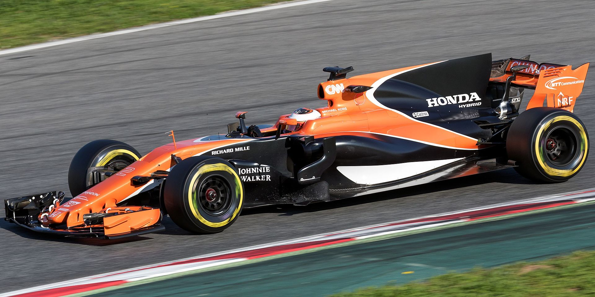
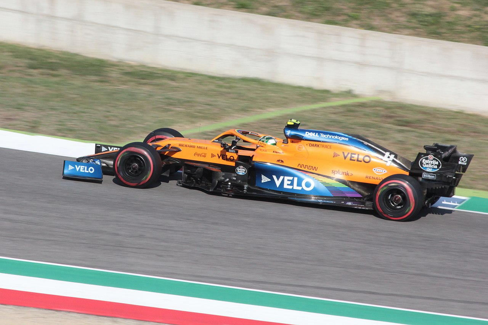

Early days (1966–1967)
Bruce McLaren made the team's Grand Prix debut at the 1966 Monaco race (of the current Formula One teams, only Ferrari is older). His race ended after nine laps due to a terminal oil leak. The 1966 car was the M2B designed by Robin Herd, but the programme was hampered by a poor choice of engines: a 3.0-litre version of Ford's Indianapolis 500 engine and a Serenissima V8 were used, the latter scoring the team's first point in Britain, but both were underpowered and unreliable. For 1967 Bruce decided to use a British Racing Motors (BRM) V12 engine, but due to delays with the engine, was forced initially to use a modified Formula Two car called the M4B powered by a 2.1-litre BRM V8, later building a similar but slightly larger car called the M5A for the V12. Neither car brought great success, the best result being a fourth at Monaco.
Ford-Cosworth DFV engines (1968–1982)
For 1968, after driving McLaren's sole entry for the previous two years, Bruce was joined by 1967 champion and fellow New Zealander Denny Hulme, who was already racing for McLaren in Can-Am. That year's new M7A car, Herd's final design for the team, was powered by Cosworth's new and soon to be ubiquitous DFV engine (the DFV would go on to be used by McLaren until 1983) and with it a major upturn in form proceeded. Bruce won the Race of Champions at the Brands Hatch circuit and Hulme won the International Trophy at Silverstone, both non-championship races, before Bruce took the team's first championship win at the Belgian Grand Prix. Hulme also won the Italian and Canadian Grands Prix later in the year, helping the team to second in the Constructors' Championship. Using an updated 'C' version on the M7, a further three podium finishes followed for Bruce in 1969, but the team's fifth win had to wait until the last race of the 1969 championship when Hulme won the Mexican Grand Prix. That year, McLaren experimented with four-wheel drive in the M9A, but the car had only a single outing driven by Derek Bell at the British Grand Prix; Bruce described driving it as like "trying to write your signature with somebody jogging your elbow".
The year 1970 started with a second-place each for Hulme and Bruce in the first two Grands Prix, but in June, Bruce was killed in a crash at Goodwood while testing the new M8D Can-Am car. After his death, Teddy Mayer took over effective control of the team; Hulme continued with Dan Gurney and Peter Gethin partnering him. Gurney won the first two Can-Am events at Mosport and St. Jovite and placed ninth in the third, but left the team mid-season, and Gethin took over from there. While 1971 began promisingly when Hulme led the opening round in South Africa before retiring with broken suspension, ultimately Hulme, Gethin (who left for BRM mid-season) and Jackie Oliver again failed to score a win. The 1972 season saw improvements though: Hulme won the team's first Grand Prix for 2+1⁄2 years in South Africa and he and Peter Revson scored ten other podiums, the team finishing third in the Constructors' Championship. McLaren gave Jody Scheckter his Formula One debut at the final race at Watkins Glen. All McLaren drivers used the Ford-Cosworth engines, except for Andrea de Adamich and Nanni Galli who used engines from Alfa Romeo in 1970.
The McLaren M23, designed by Gordon Coppuck, was the team's new car for the 1973 season. Sharing parts of the design of both McLaren's Formula One M19 and Indianapolis M16 cars (itself inspired by Lotus's 72), it was a mainstay for four years. Hulme won with it in Sweden and Revson took the only Grand Prix wins of his career in Britain and Canada. In 1974, Emerson Fittipaldi, world champion with Lotus two years earlier, joined McLaren. Hulme, in his final Formula One campaign, won the Argentinian season-opener; Fittipaldi, with wins in Brazil, Belgium and Canada, took the Drivers' Championship. It was a close fight for Fittipaldi, who secured the title with a fourth at the season-ending United States Grand Prix, putting him three points ahead of Ferrari's Clay Regazzoni. With Hulme and multiple motorcycle world champion Mike Hailwood, he also sealed McLaren's first Constructors' Championship. The year 1975 was less successful for the team: Fittipaldi was second in the championship behind Niki Lauda. Hulme's replacement Jochen Mass took his sole GP win in Spain.
At the end of 1975, Fittipaldi left to join his brother's Fittipaldi/Copersucar team. With the top drivers already signed to other teams, Mayer turned to James Hunt, a driver on whom biographer Gerald Donaldson reflected as having "a dubious reputation". In 1976, Lauda was again strong in his Ferrari; at midseason, he led the championship with 56 points while Hunt had only 26 despite wins in Spain (a race from which he was initially disqualified) and France. At the German Grand Prix, though, Lauda crashed heavily, was nearly killed, and missed the next two races. Hunt capitalised by winning four more Grands Prix giving him a three-point deficit going into the finale in Japan. Here it rained torrentially, Lauda retired because of safety concerns, and Hunt sealed the Drivers' Championship by finishing third. McLaren, though, lost the Constructors' Championship to Ferrari.
In 1977, the M23 was gradually replaced with the M26, the M23's final works outing being Gilles Villeneuve's Formula One debut with the team in a one-off appearance at the British Grand Prix. Hunt won on three occasions that year, but the Lauda and Ferrari combination proved too strong, Hunt and McLaren managing just fifth and third in the respective championships. From there, results continued to worsen. Lotus and Mario Andretti took the 1978 titles with their 78 and 79 ground-effect cars and neither Hunt nor Mass's replacement Patrick Tambay were able to seriously challenge with the nonground-effect M26. Hunt was dropped at the end of 1978 in favour of Lotus's Ronnie Peterson, but when Peterson was killed by a crash at the Italian Grand Prix, John Watson was signed, instead. No improvement occurred in 1979; Coppuck's M28 design was described by Mayer as "ghastly, a disaster" and "quite diabolical" and the M29 did little to change the situation. Tambay scored no points and Watson only 15 to place the team eighth at the end of the year.
The 1980s started much as the 1970s had ended: Alain Prost took over from Tambay but Watson and he rarely scored points. Under increasing pressure since the previous year from principal sponsor Philip Morris and their executive John Hogan, Mayer was coerced into merging McLaren with Ron Dennis's Project Four Formula Two team, also sponsored by Philip Morris. Dennis had designer John Barnard who, inspired by the carbon-fibre rear wings of the BMW M1 race cars that Project Four was preparing, had ideas for an innovative Formula One chassis constructed from carbon-fibre instead of conventional aluminium alloy. On their own, they lacked the money to build it, but with investment that came with the merger it became the McLaren MP4 (later called MP4/1) of 1981, driven by Watson and Andrea de Cesaris. In the MP4, Watson won the British Grand Prix and had three other podium finishes. Soon after the merger, McLaren moved from Colnbrook to a new base in Woking and Dennis and Mayer initially shared the managing directorship of the company; by 1982, Mayer had departed and Tyler Alexander's and his shareholdings had been bought by the new owners.
TAG-Porsche and Honda engines (1983–1992)
In the early 1980s, teams like Renault, Ferrari, and Brabham began using 1.5-litre turbocharged engines instead of the 3.0-litre naturally aspirated engines that had been standard since 1966. Seeing the growing importance of turbo technology, Ron Dennis convinced Williams backer Techniques d'Avant Garde (TAG) to fund Porsche-built, TAG-branded turbo engines made to designer John Barnard's specifications. TAG's founder, Mansour Ojjeh, would later become a McLaren shareholder. In the meantime, McLaren continued with Cosworth engines, as former champion Niki Lauda came out of retirement in 1982 to drive alongside John Watson in that year's MP4/1B. They each won two races, with Watson notably taking victory from 17th on the grid in Detroit. At one stage of the season, McLaren stood second in the Constructors' Championship. As part of a dispute with FISA, they boycotted the San Marino Grand Prix. Although 1983 was less successful, Watson secured another remarkable win in the United States, starting from 22nd on the grid at Long Beach.
Having been fired by Renault, Prost returned to McLaren once again for 1984. Now using the TAG engines, the team dominated, scoring 12 wins and earning two-and-a-half times as many Constructors' points as their nearest rival, Ferrari. In the Drivers' Championship, Lauda prevailed over Prost by half a point — the narrowest margin in F1 history. The McLaren-TAGs remained strong in 1985, bringing home a third Constructors' Championship, while this time Prost claimed the Drivers' title. In 1986, the Williams team surged back into contention with their Honda engine and the driver pairing of Nigel Mansell and Nelson Piquet. At McLaren, Lauda's replacement, 1982 champion Keke Rosberg, struggled to connect with the car. Williams secured the Constructors' title, but with wins in San Marino, Monaco, and Austria, Prost stayed in the title hunt. Because the Williams drivers split points throughout the season, Prost still had a chance heading into the final race — the Australian Grand Prix. A puncture for Mansell and a precautionary pit stop for Piquet handed Prost the victory and his second World Championship, making him the first driver to win back-to-back titles since Jack Brabham in 1959 and 1960. In 1987, John Barnard left McLaren to join Ferrari and was replaced by Steve Nichols, who would also later move to Ferrari in 1989. In the hands of Prost and Stefan Johansson, however, Nichols's MP4/3 paired with the TAG engine couldn't match the pace of the Williams-Honda.
For 1988, Honda switched their supply to McLaren and, encouraged by Prost, Dennis signed Ayrton Senna to drive. Despite regulations reducing the boost pressure and fuel capacity (and therefore power) of the turbo cars, Honda persisted with a turbocharged engine. In the MP4/4, Senna and Prost engaged in a season-long battle, winning 15 of the 16 races. At the other race, the Italian Grand Prix at Monza, Senna had been leading comfortably but collided with back-marker Jean-Louis Schlesser.At the Portuguese Grand Prix, their relationship soured when Senna squeezed Prost against the pit wall; Prost won, but afterwards remarked, "It was dangerous. If he wants the world championship that badly he can have it." Prost actually scored more points overall that year, but due to a rule that only the best 11 results counted toward the championship, Senna took the title at the penultimate race in Japan.
The next year, with turbos banned, Honda supplied a new 3.5-L naturally aspirated V10 engine, and McLaren again won both titles with the MP4/5. Their drivers' relationship continued to deteriorate, though, especially when, at the San Marino Grand Prix, Prost felt that Senna had reneged on an agreement not to pass each other at the first corner. Believing that Honda and Dennis were favouring Senna, Prost announced mid-season that he would leave to drive at Ferrari the following year. For the second year in succession, the Drivers' Championship was decided at the Japanese Grand Prix, this time in Prost's favour after Senna and he collided (Senna initially recovered and won the race, but was later disqualified).
With former McLaren men Nichols and Prost (Barnard had moved to the Benetton team), Ferrari pushed the British team more closely in 1990. McLaren, in turn, brought in Ferrari's Gerhard Berger, but like the two seasons before, the Drivers' Championship was led by Prost and Senna and settled at the penultimate race in Japan. Here, Senna collided with Prost at the first corner, forcing both to retire, but this time Senna escaped punishment and took the title; McLaren also won the Constructors' Championship. The 1991 year was another for McLaren and Senna, with the ascendant Renault-powered Williams team their closest challengers. By 1992, Williams, with their advanced FW14B car, had overtaken McLaren, breaking their four-year run as champions, despite the latter winning five races that year.

Ford, Lamborghini and Peugeot engines (1993–1994)
As Honda withdrew from the sport at the end of 1992, McLaren sought a new engine supplier. A deal to secure Renault engines fell through; subsequently, McLaren switched to customer Ford engines for the 1993 season. Senna—who initially agreed only to a race-by-race contract before later signing for the whole year—won five races, including a record-breaking sixth victory at Monaco and a win at the European Grand Prix, where he went from fifth to first on the opening lap. His teammate, 1991 CART champion Michael Andretti, fared much worse; he scored only seven points and was replaced by test driver Mika Häkkinen for the final three rounds of the season. Williams ultimately won both titles, and Senna—who had flirted with moving there for 1993—signed with them for the 1994 season. During the 1993 season, McLaren took part in a seven-part BBC Television documentary called A Season With McLaren.
McLaren tested a Lamborghini V12 engine ahead of the 1994 season, as part of a potential deal with the then-Lamborghini owner Chrysler, before eventually deciding to use Peugeot engines. With Peugeot power, the MP4/9 was driven by Häkkinen and Martin Brundle. Despite achieving eight podiums over the season, no wins were achieved. Peugeot was dropped after a single year due to multiple engine failures and unreliability, which cost McLaren potential race victories, and they switched to a Mercedes-Benz-branded, Ilmor-designed engine.
Mercedes partnership (1995–2014)
1995–2009: Works Mercedes partnership
For the 1995 season onwards, McLaren ended their engine deal with Peugeot Sport and started a full works engine partnership with Mercedes-Benz High Performance Engines for the first time, after the German manufacturer spent one year in partnership with the Sauber team. The partnership included free engines from Mercedes-Benz built and assembled by Ilmor Engineering, official team vehicles, financial support, and full-factory backing from Daimler AG and Mercedes-Benz. Mercedes-Benz and Ilmor staff also worked with the team at their Woking base. McLaren's Formula One car for the 1995 season, the MP4/10, was not a front-runner, and Brundle's replacement, former champion Nigel Mansell, was unable to fit into the car at first and departed after just two races, with Mark Blundell taking his place.
While Williams dominated in 1996, McLaren, now with David Coulthard alongside Häkkinen, went a third successive season without a win. In 1997, however, Coulthard broke this run by winning the season-opening Australian Grand Prix; Häkkinen and he would each win another race before the end of the season, and highly rated designer Adrian Newey joined the team from Williams in August that year. Despite the car's improved pace, unreliability proved costly throughout the season, with retirements at the British and Luxembourg Grands Prix occurring whilst Häkkinen was in the lead. It was also at the start of this season that long-time sponsor Marlboro shifted its support to long-time rival Ferrari. For the first time since the 1974 season, McLaren would have a new identity, shifting to fellow tobacco sponsor West. This saw the traditional red and white replaced with silver, grey, white, and red. McLaren would retain this colour scheme (or very similar) for twenty years until 2017.
With Newey able to take advantage of new technical regulations for 1998, and with Williams losing their works Renault engines following Renault's temporary withdrawal from the sport, McLaren were once again able to challenge for the championship. Häkkinen and Coulthard won five of the first six races despite the banning of the team's "brake steer" system, which allowed the rear brakes to be operated individually to reduce understeer, after a protest by Ferrari at the second race in Brazil. Schumacher and Ferrari provided the greatest competition, with the former levelled on points with Häkkinen with two races to go, but wins for Häkkinen at the Luxembourg and Japanese Grands Prix gave both him the Drivers' Championship and McLaren the Constructors' Championship. Häkkinen won his second Drivers' Championship the following season, but due to a combination of driver errors and mechanical failures, the team lost the Constructors' title to Ferrari.
In 2000 McLaren won seven races in a close fight with Ferrari, but ultimately Ferrari and Schumacher prevailed in both competitions. This marked the start of a decline in form as Ferrari cemented their dominance of Formula One and also beryllium engine material was banned in Formula One, which affected Mercedes engine performance. In 2001, Häkkinen was outscored by Coulthard for the first time since 1997 and retired (ending Formula One's longest ever driver partnership), his place taken by Kimi Räikkönen. Then in 2002, Coulthard took their solitary win at Monaco while Ferrari repeated McLaren's 1988 feat of 15 wins in a season.
The year 2003 started promisingly, with one win each for Coulthard and Räikkönen at the first two Grands Prix. However, they were hampered when the MP4-18 car designed for that year suffered crash test and reliability problems, forcing them to continue using a 'D' development of the year-old MP4-17 for longer than they had initially planned. Despite this, Räikkönen scored points consistently and challenged for the championship up to the final race, eventually losing by two points. The team began 2004 with the MP4-19, which technical director Adrian Newey described as "a debugged version of [the MP4-18]". It was not a success, though, and was replaced mid-season by the MP4-19B. With this, Räikkönen scored the team's and his only win of the year at the Belgian Grand Prix, as McLaren finished fifth in the Constructors' Championship, their worst ranking since 1983.
Coulthard left for Red Bull Racing in 2005 and was replaced by former CART champion Juan Pablo Montoya, for what was McLaren's most successful season in several years as he and Räikkönen won ten races. However, both the team's inability to understand why the car could not heat its tyres properly in the early stages of the season and the overall unreliability of the MP4-20 cost several race victories when Räikkönen had been leading or in contention to win, also affecting his grid positions in some qualifying sessions. This allowed Renault and their driver Fernando Alonso to capitalise and win both titles.
In 2006, the superior reliability and speed of the Ferraris and Renaults prevented the team from gaining any victories for the first time in a decade. Montoya parted company acrimoniously with the team to race in NASCAR after the United States Grand Prix, where he crashed into Räikkönen at the start; test driver Pedro de la Rosa deputised for the remainder of the season. The team also lost Räikkönen to Ferrari at the end of the year.
Steve Matchett argued that the poor reliability of McLaren in 2006 and recent previous years was due to a lack of team continuity and stability. His cited examples of instability are logistical challenges related to the move to the McLaren Technology Centre, Adrian Newey's aborted move to Jaguar and later move to Red Bull, the subsequent move of Newey's deputy to Red Bull, and personnel changes at Ilmor.
After scoring no victories in 2006, the team returned to competitive status in 2007. That year saw Fernando Alonso race alongside Formula One debutant and long-time McLaren protégé Lewis Hamilton. The pair scored four wins each and led the Drivers' Championship for much of the year, but tensions arose within the team, and BBC Sport claimed that Alonso was unable to cope with Hamilton's competitiveness. At the Hungarian Grand Prix, Alonso was judged to have deliberately impeded his teammate during qualifying, so the team were not allowed to score Constructors' points at the event. An internal agreement within the McLaren team stated that drivers would alternatively have an extra lap for qualifying; however, Lewis Hamilton refused to accept this for the Hungarian Grand Prix. Subsequently, the McLaren team was investigated by the FIA for having proprietary technical blueprints of Ferrari's car – the so-called "Spygate" controversy. At the first hearing, McLaren management consistently denied all knowledge, blaming a single "rogue engineer." However, in the final hearing, McLaren was found guilty and the team was excluded from the Constructors' Championship and fined $100 million. The drivers were allowed to continue without penalty, and while Hamilton led the Drivers' Championship heading into the final race in Brazil, Räikkönen in the Ferrari won the race and the Drivers' Championship, a single point ahead of both McLaren drivers. In November, Alonso and McLaren agreed to terminate their contract by mutual consent, with Heikki Kovalainen filling the vacant seat alongside Hamilton.
In 2008, a close fight ensued between Hamilton and the Ferraris of Felipe Massa and Räikkönen; Hamilton won five times and despite also crossing the finish line first at the Belgian Grand Prix, he was deemed to have gained an illegal advantage by cutting a chicane during an overtake and was controversially demoted to third. Going into the final race in Brazil, Hamilton had a seven-point lead over Massa. Massa won there, but Hamilton dramatically clinched his first Drivers' Championship by moving into the necessary fifth position at the final corner of the final lap of the race. Despite winning his first Grand Prix in Hungary, Kovalainen finished the season only seventh in the overall standings, allowing Ferrari to take the constructors' title.
Before the start of the 2009 season, Dennis retired as team principal, handing responsibility to Martin Whitmarsh, but the year started badly: the MP4-24 car was off the pace and the team was given a three-race suspended ban for misleading stewards at the Australian and Malaysian Grands Prix. Despite these early problems, a late revival had Hamilton win at the Hungarian and Singapore Grands Prix.
2010–2014: Customer Mercedes engines
For the 2010 season, McLaren lost its status as the Mercedes works team; Mercedes decided to buy the Brackley-based Brawn team that had won the 2009 titles with its customer engines, Whitmarsh having chosen to abandon their exclusive rights to the Mercedes engines to help Brawn run. Mercedes still continued providing engines to McLaren, albeit under a supplier-customer relationship rather than the works partnership as before, while it sold its 40% shares of McLaren over two years. McLaren signed 2009 champion, Jenson Button, to replace Kovalainen alongside Hamilton in 2010. Button won twice (in Australia and China) and Hamilton three times (in Turkey, Canada, and Belgium), but they and McLaren failed to win their respective championships, that year's MP4-25 largely outpaced by Red Bull's RB6.
Hamilton and Button remained with the team into 2011, with Hamilton winning three races – China, Germany, and Abu Dhabi and Button also winning three races – Canada, Hungary, and Japan. Button finished the Drivers' Championship in second place with 270 points behind 2011 Drivers' Champion Sebastian Vettel of Red Bull Racing, ahead of Hamilton's 227 points. McLaren was second in the Constructors' Championship to Red Bull Racing. Throughout the season, Hamilton was involved in several incidents with other drivers including – most notably – multiple collisions with 2008 title rival Massa.
In 2012, McLaren won the first race of the year in Australia with a dominant victory by Button and a 3rd place from pole for Hamilton, while Hamilton went on to win in Canada, but by the mid-way mark of the season at the team's home race at Silverstone, the McLaren cars managed only eighth place (Hamilton) and 10th place (Button), while the drivers' and Constructors' Championships were being dominated by Red Bull Racing and Ferrari, whose cars occupied the first four places of the British Grand Prix, this was partially due to pit stop problems and Button's temporary dip in form after not adapting as well as Hamilton to the new Pirelli tyres. The car also suffered reliability problems which cost the team and its drivers numerous potential points, most notably in Singapore and Abu Dhabi, where Hamilton had been leading from the front in both races and in Italy where the team lost a 1-2 finish when Button's car failed with fuel problems on lap 33.
Sergio Pérez replaced Hamilton for 2013, after Hamilton decided to leave for Mercedes. The team's car for the season, the MP4-28, was launched on 31 January 2013. The car struggled to compete with the other top teams and the season had McLaren fail to produce a podium finish for the first time since 1980.
Kevin Magnussen replaced Pérez for 2014, and Ron Dennis, who had remained at arm's length since stepping down from the team principal role, returned as CEO of the operation. McLaren was the first team to officially launch their 2014 car, the MP4-29, which was revealed on 24 January 2014. They had a largely unsuccessful 2014; their best result was in Australia where – after Daniel Ricciardo's disqualification from second place – Magnussen finished second and Button third. Button subsequently finished fourth in Canada, Britain, and Russia. Their highest grid position was in Britain with Button's third place on the grid.
Return to Honda engines (2015–2017)
For 2015, McLaren ended their engine deal with Mercedes which included buying back the 40% stake that Mercedes held in the team and reforging their historical partnership with Honda. The Honda deal not only meant they would supply engines, but that Honda staff would work with the team at their Woking base as well as received full-factory support from Honda including official team vehicles and free engines. The team announced Fernando Alonso and Jenson Button as their race drivers, with Kevin Magnussen demoted to test driver. During pre-season testing at the Circuit de Barcelona-Catalunya in February, Alonso suffered a concussion and, as a result, Kevin Magnussen replaced him for the season-opening Australian Grand Prix in March. At that inaugural race of the season, Jenson Button finished 11th, but was lapped twice and finished last of the finishing cars. Following considerable unreliability and initial suggestions that the Honda engine was underpowered relative to its competitors, steady performance gains eventually resulted in Button managing to score the team's first (four) points of the season at the sixth round in Monaco. By contrast, Alonso scored his first point three races later at the British Grand Prix.
The Hungarian Grand Prix saw the team score their best result of the season with Alonso and Button finishing fifth and ninth, respectively. However, McLaren did not score points in the next four races until Button finished ninth at the Russian Grand Prix. At the following United States Grand Prix, Button scored his best result of the season with sixth place. The team finished ninth in the constructors' standings with 27 points, McLaren's worst performance since 1980.
McLaren retained the Alonso–Button pairing for the 2016 season. The second year of the Honda partnership was better than the first, with the team being able to challenge for top 10 positions on a more regular basis. However, the season started with a massive crash at the Australian Grand Prix in which Fernando Alonso sustained rib fractures and a collapsed lung after colliding with Esteban Gutiérrez and somersaulting into the crash barriers. Alonso, as a result of his injuries, was forced to miss the second round of the Championship, the Bahrain Grand Prix, and was replaced by reserve driver Stoffel Vandoorne. Vandoorne produced an impressive performance in his first race to score the team's first point of the season with 10th place. The next points for McLaren came at the Russian Grand Prix with Alonso and Button finishing sixth and 10th respectively. The rain-affected Monaco Grand Prix was one of the best races of the season for the team. Alonso finished fifth, having kept Nico Rosberg's Mercedes behind him for 46 laps, while Button scored two points with ninth. At the Austrian Grand Prix, Button recorded his best result of the season with a sixth place after qualifying third in a wet/dry session. After a disappointing display at their home race, the British Grand Prix at Silverstone, the team scored points at the next three rounds with six points in Hungary, four in Germany, and six points again thanks to an impressive seventh-place finish from Alonso at the Belgian Grand Prix. At the United States Grand Prix, McLaren matched their Monaco result with 12 points after an attacking race from Alonso saw him claim fifth position while Button once again finished ninth. After a season of significant progress compared to 2015, Alonso and Button finished the championship in 10th and 15th places respectively with the team ending the season in sixth place in the Constructors' Championship with 76 points. On 3 September 2016, Jenson Button announced he would take a sabbatical from Formula One for the 2017 season. He then confirmed on 25 November that he would retire from F1 altogether with Vandoorne being Alonso's new teammate for 2017.
In February 2017, McLaren signed Lando Norris to their Young Driver Programme.
Alonso did not take part in the 2017 Monaco Grand Prix as he was participating
in the Indianapolis 500. Instead, Jenson Button returned for the one race as his
replacement. McLaren finished 2017 9th with 30 points in total.
Renault engines (2018–2020)
McLaren announced during the 2017 Singapore Grand Prix weekend that they would split from engine supplier Honda at the end of the 2017 season and had agreed on a three-year customer deal to be supplied with Mecachrome-assembled Renault engines. Team boss Éric Boullier described their performance between 2015 and 2017 as a "proper disaster" for the team's credibility. 2018 was the first season in McLaren's history when their cars were powered by Renault engines. McLaren also announced that Fernando Alonso and Stoffel Vandoorne would remain with the team for the 2018 season. On 6 November 2017, the team announced that Lando Norris would be the team's test and reserve driver.
At the season-opening Australian Grand Prix, Fernando Alonso scored the team's best finish since the 2016 Monaco Grand Prix with fifth. Alonso said that the team's target would be Red Bull Racing. McLaren had a relatively good start to the season with points finishes in the next four races, but in the next 16 races after Spain, McLaren only scored 22 points, 8 points less than in the same period in 2017. On 14 August 2018, Fernando Alonso announced he would not compete in Formula One in 2019, ending his four-year spell at the team. Carlos Sainz Jr. was signed as his replacement on a multi-year deal. On 3 September 2018, it was announced that Stoffel Vandoorne would be leaving the team at the end of the season, with Lando Norris being promoted from reserve driver to replace him in 2019. McLaren struggled with performance throughout the season, with the McLaren drivers being knocked out 21 times in the first qualifying session, and McLaren having the second-worst average qualifying ranking of any team, only ahead of Williams. The team finished the disappointing season – after being helped by the exclusion of Force India's points from the first 12 races – in 6th place with 62 points, 357 points behind their target, Red Bull Racing, with the same engine.
The 2019 season was much more positive for McLaren, with the team securely establishing themselves as the best constructor behind Mercedes, Ferrari, and Red Bull. At the Brazilian Grand Prix, Sainz recorded the team's first podium since the 2014 Australian Grand Prix, finishing fourth on the road but later promoted to third after Lewis Hamilton received a post-race penalty, meaning that the team missed out on the official podium ceremony. McLaren ended the season in 4th place with 145 points, their best result since 2014 and 54 points ahead of their nearest competitor, Renault.
McLaren retained Norris and Sainz for the 2020 season. The season was significantly impacted by the COVID-19 pandemic. The season was shortened to 18 races, with the season opener to take place in Austria. At the Austrian Grand Prix, Norris achieved his first ever podium, finishing in third. Sainz achieved the team's second podium in 2020 at the Italian Grand Prix, where he finished second. The team finished the 2020 season third in the constructors' championship with 202 points. Sainz finished the drivers' championship in sixth with 105 points and Norris in ninth with 97 points.
2024: Constructors' Champion

The success of the MCL60 provided McLaren, who finished the 2023 season in fourth, allowing for more testing time, numerous opportunities to capitalise in performance for the 2024 season. Retaining Norris and Piastri, the team hired David Sanchez from Scuderia Ferrari to lead development alongside Peter Prodromou and Neil Houldey (after a restructuring, Rob Marshall would lead development) for the 2024 car, titled the MCL38. The MCL38 marked the first design to be developed in the in-house McLaren wind tunnel. Team principal Andrea Stella set three goals for development of the MCL38, including improving aerodynamic efficiency, mechanical grip, tyre performance, and overall driveability, which had been a long-standing problem of McLaren cars; the latter issue was exacerbated with the mid-season upgrades introduced to the MCL60. Stella theorised that field-leading Red Bull Racing, who had dominated the 2023 season, had built up a backlog of upgrades for the RB20.
The MCL38 was first introduced at the 2024 Bahrain Grand Prix and took its first podium with Norris at the 2024 Australian Grand Prix; by this point, the MCL38 proved to be the third-fastest car overall behind Ferrari's SF-24. The SF-24 had superior tyre management, but the MCL38 excelled in qualifying. McLaren revealed a substantial upgrade package that would be utilised for the Miami Grand Prix. The upgrade's success was confirmed after Norris took the lead from Verstappen and went on to win the race, marking his maiden Formula One career victory. McLaren expected the upgrades to improve the car's performance across all conditions; the upgrade was much more successful than expected, to the point the team needed to investigate it.
The MCL38 displayed consistency following the Miami victory, with either driver being a constant presence on the podium; by the British Grand Prix, the MCL38 had been established as the fastest car. Among these successes was a 1-2 finish at the Hungarian Grand Prix, McLaren's first since the 2021 Italian Grand Prix. A mid-season upgrade introduced for the Dutch Grand Prix further improved performance, with Norris winning by over 27 seconds ahead of second-placed Verstappen. Piastri's triumph at the Azerbaijan Grand Prix moved McLaren up to first in the World Constructors' Championship. This was the first time since 2014 that McLaren had led the WCC. In Abu Dhabi, Norris finished in first to win McLaren's first World Constructors' Championship since 1998